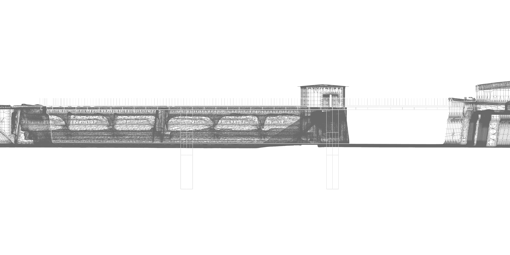
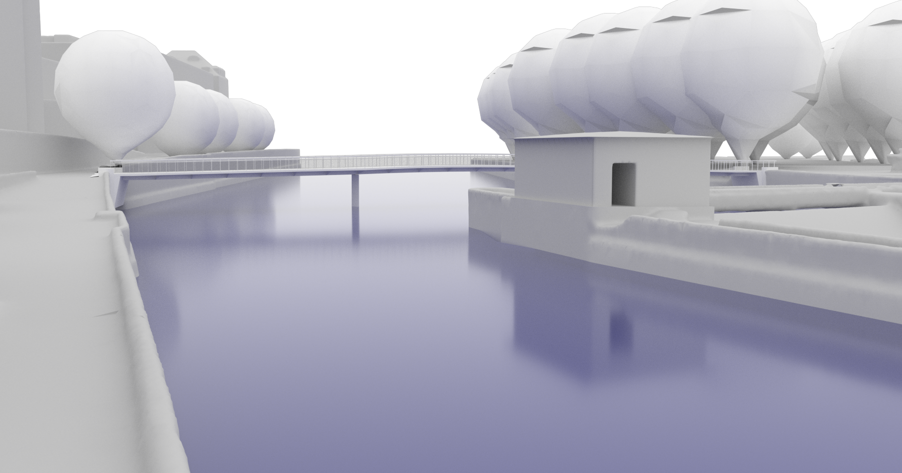

Bridge Design Concept
STEEL + UHPC | 40M SPAN | ZÜRICH
Computational optimization of a composite superstructure. Focused on integral abutments to eliminate mechanical bearings and reduce embodied carbon through material efficiency.


